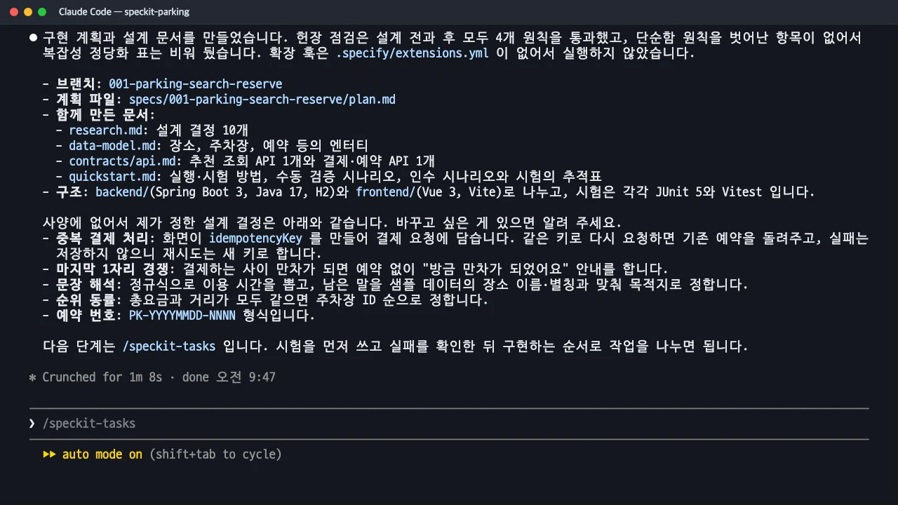

이제 기술을 정합니다.
/speckit-plan에 선택한 기술을 전달하면plan.md와 함께 설계 결정 기록, 데이터 모델, API 계약, 검증 안내가 생깁니다. 헌법 점검 표가 어떻게 「관문」 역할을 하는지, 사양에 없던 결정이 어디에 들어가는지 확인합니다.
이 장의 산출물 · GitHub
이 장이 끝났을 때의 파일이 공개 저장소 uengine-oss/tutorial-speckit-handson의 태그 step-06-plan에 있습니다. 본문의 파일 이름을 눌러도 해당 파일이 열립니다.
무엇을 · 왜#
명세가 무엇을, 왜였다면 계획은 어떻게입니다. 같은 사양으로도 계획은 여러 개 나올 수 있습니다. 그래서 기술 선택은 이 단계에서 사람이 직접 말해 줍니다.
| 문서 | 내용 |
|---|---|
plan.md |
요약, 기술 맥락(언어·의존성·저장소·시험·성능 목표·제약), 헌법 점검(Constitution Check), 프로젝트 구조 |
research.md |
설계 결정마다 결정(Decision)·이유(Rationale)·제외한 대안(Alternatives) |
data-model.md |
엔터티와 필드, 타입, 규칙 |
contracts/ |
화면과 서버 사이의 약속(API 요청·응답·오류) |
quickstart.md |
실행·시험 방법, 직접 확인할 검증 시나리오, 인수 시나리오 ↔ 시험 추적표 |
따라 하기#
- 기술 선택을 넘깁니다. 헌법의 「단순함」 원칙에 맞게 서비스 하나, 화면 하나로 정했습니다.
/speckit-plan 웹 화면은 Vue 3(Vite), 백엔드는 Spring Boot 3(Java 17) 서비스 하나로 만든다. 데이터는 H2 인메모리 DB에 두고, 전국 주차장 샘플은 JSON 파일로 시작할 때 읽는다. 문장 해석은 외부 AI 없이 규칙으로 하고, 결제는 모의 결제로 한다. 시험은 백엔드 JUnit 5, 화면 Vitest. - 요약과 「제가 정한 결정」을 읽습니다. 1분 8초 뒤 다섯 문서가 생겼고, 헌법 점검은 설계 전후 모두 통과했습니다. 마지막에 "사양에 없어서 제가 정한 설계 결정"이 다섯 개 나왔습니다. 중복 결제는 화면이 만든
idempotencyKey로 구분, 마지막 한 자리를 두고 경쟁하다 만차가 되면 「방금 만차가 되었어요」 안내, 정규식으로 이용 시간 해석, 동률이면 주차장 ID 순, 예약 번호는PK-YYYYMMDD-NNNN.
계획이 끝난 뒤의 요약: 함께 만든 문서와 사양에 없어서 정한 설계 결정
「제가 정한 결정」은 사양을 비켜 가는 곳이다
두 번째 결정(결제 중 만차)은 사용자에게 보이는 동작인데 spec.md에는 없었습니다. 헌법 III 「사양에 없는 기능은 만들지 않는다」와 어긋납니다. 이 실습에서는 바로 다음 장의 품질 점검이 이를 CHK014로 찾아냈습니다. 계획의 요약 끝에 나오는 이런 목록은 그냥 넘기지 말고, 사양에 반영할 것과 계획에 둘 것을 구분하는 데 쓰세요.
산출물 읽는 법#
① 기술 맥락. 사양의 성공 기준을 기술 목표로 구체화합니다. SC-001(10초 안에 추천 확인)은 "샘플 수십 곳 규모라 인메모리 계산으로 충분하다"는 판단으로 이어졌습니다.
**Storage**: H2 인메모리 DB. 시작 시 `parking-lots.json`(classpath)을 읽어 적재. 재시작하면 예약과 잔여 면수는 초기화된다.
**Performance Goals**: 문장 입력부터 추천 표시까지 10초 이내(SC-001). 샘플 수십 곳 규모라 인메모리 계산으로 충분하다.
② 헌법 점검(관문). 틀에 "Phase 0 조사 전에 통과해야 하고, Phase 1 설계 뒤에 다시 확인한다"고 적혀 있습니다. 원칙마다 판정과 근거를 남기고, 원칙을 벗어나는 복잡성이 있으면 아래 「Complexity Tracking」 표에 이유를 적어야 합니다. 이번에는 비어 있습니다.
| 원칙 | 판정 | 근거 |
|---|---|---|
| I. 시험 먼저 | 통과 | 인수 시나리오 10개마다 시험을 먼저 쓰고 실패를 확인한 뒤 구현합니다(tasks 단계에서 순서 강제) |
| II. 단순함 | 통과 | 서비스 1개 + 화면 1개. 결제는 서비스 내부 모의 구성요소. 메시지 큐·캐시·별도 서비스 없음 |
| III. 사양이 기준 | 통과 | 계획의 모든 엔드포인트·엔터티는 FR-001~016에 대응 |
| IV. 한국어 사용 | 통과 | 문서와 화면·오류 문구를 한국어로 작성. 식별자만 영어 |
③ 설계 결정 기록(research.md). 결정마다 제외한 대안이 함께 남습니다. 나중에 "왜 이렇게 했지?"를 물을 때 이 문서를 봅니다.
## 1. 문장 해석 (규칙 기반)
- **Decision**: 정규식으로 이용 시간(`N시간`, `N분`, `N시간 M분`)을 추출하고, 나머지에서 불용어를 뺀 문자열을 장소 이름/별칭과 대조해 목적지를 정한다.
- **Alternatives**: LLM 해석(외부 의존·비결정적 → 제외), 형태소 분석기(과한 의존성 → 제외).
## 6. 잔여 면수 차감과 동시성
- **Decision**: `UPDATE lot SET available = available - 1 WHERE id = ? AND available > 0` 한 문장으로 차감하고, 영향 행이 0이면 "만차" 오류를 돌려준다.
④ 데이터 모델과 API 계약. 사양의 핵심 엔터티가 필드와 타입이 됩니다(ParkingLot.hourlyFee: int, ≥ 0). 계약에는 GET /api/recommendations?query=…와 POST /api/payments 두 개가 있고, 오류는 { "code", "message" } 형식에 한국어 메시지(FR-016)로 정했습니다. 결제 실패는 402, 결제 중 만차는 409입니다. 계약 끝에는 요구사항 ↔ 엔드포인트 추적표가 있습니다.
⑤ 검증 안내(quickstart.md). 실행 명령, 직접 확인할 시나리오 여섯 개, 인수 시나리오마다 어느 시험으로 확인하는지 적은 추적표가 있습니다. 마지막 장에서 실제 앱을 실행할 때 이 문서를 그대로 따릅니다.
확인 문제#
헌법 점검 표는 왜 설계 전과 후에 두 번 확인하나요?
설계 전에는 기술 선택 자체가 원칙을 어기는지(예: 서비스를 여럿으로 나누는지) 봅니다. 설계 후에는 데이터 모델과 계약을 만들면서 원칙을 벗어난 것이 생겼는지 다시 봅니다. 원칙을 벗어나야 한다면 「Complexity Tracking」에 이유를 남겨야 합니다.
이 실습의 계획에서 사양과 어긋난 곳은 어디였고, 어떻게 드러났나요?
「결제 중 만차」 처리(409 LOT_FULL)가 계획과 계약에만 있고 사양에는 없었습니다. 계획 단계의 헌법 점검은 이를 통과로 적었지만, 다음 장의 /speckit-checklist가 사양·계획·계약을 함께 읽고 CHK014로 「헌법 III와 충돌」을 지적했습니다. 그 뒤 명확화를 한 번 더 실행해 사양에 FR-017로 추가했습니다.